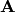
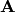

Ordination¶
Ecopy contains numerous methods for ordination, that is, plotting points in reduced space. Techniques include, but are not limited to, principle components analysis (PCA), correspondence analysis (CA), principle coordinates analysis (PCoA), and multidimensional scaling (nMDS).
- class pca(x, scale=True, varNames=None)¶
Takes an input matrix and performs principle components analysis. It will accept either pandas.DataFrames or numpy.ndarrays. It returns on object of class ‘pca’, with several methods and attributes. This function uses eigenanalysis of covariance matrices rather than SVD decomposition. NOTE: PCA will NOT work with missing observations, as it is up to the user to decide how best to deal with those. Returns object of class pca.
Parameters
- x: a numpy.ndarray or pandas.DataFrame
- A matrix for ordination, where objects are rows and descriptors/variables as columns. Can be either a pandas.DataFrame or numpy. ndarray
- scale: [True | False]
- Whether or not the columns should be standardized prior to PCA. If ‘True’, the PCA then operates on a correlation matrix, which is appropriate if variables are on different measurement scales. If variables are on the same scale, use ‘False’ to have PCA operate on the covariance matrix.
- varNames: list
- If using a numpy.ndarray, pass a list of column names for to help make PCA output easier to interpret. Column names should be in order of the columns in the matrix. Otherwise, column names are represented as integers during summary.
Attributes
- evals¶
Eigenvalues in order of largest to smallest
- evecs¶
Normalized eigenvectors corresponding to each eigenvalue (i.e. the principle axes)
- scores¶
Principle component scores of each object (row) on each principle axis. This returns the raw scores
 calculated as where
calculated as where  is the matrix of eigenvectors and
is the matrix of eigenvectors and  are the original observations.
are the original observations.
Methods
- classmethod summary_imp()¶
Returns a data frame containing information about the principle axes.
- classmethod summary_rot()¶
Returns a data frame containing information on axes rotations (i.e. the eigenvectors).
- classmethod summary_corr()¶
Returns a data frame containing the correlation of each variable (column) with each principle axis. For example, the correlation of variable i with axis k is calculated as where is the eigenvalue (i.e. variance) associated with axis k and is the variance of variable i.
- classmethod summary_desc()¶
Returns a data frame containing the cumulative variance explained for each predictor along each principle axis
- classmethod biplot(xax=1, yax=2, type='distance', obsNames=False)¶
Create a biplot using a specified transformation.
- xax: integer
- Specifies which PC axis to plot on the x-axis
- yax: integer
- Specifies which PC axis to plot on the y-axis
- type: [‘distance’ | ‘correlation’]
Type ‘distance’ plots the raw scores
and the raw vectors of the first two principle axes.Type ‘correlation’ plots scores and vectors scaled by the eigenvalues corresponding to each axis: and
 , where
, where  is a diagonal matrix containing the eigenvalues.
is a diagonal matrix containing the eigenvalues.- obsNames: [True | False]
- Denotes whether to plot a scatterplot of points (False) or to actually show the names of the observations, as taken from the DataFrame index (True).
Examples
Principle components analysis of the USArrests data. First, load the data from R using pandas:
import ecopy as ep import pandas.rpy.common as com USArrests = com.load_dataset('USArrests')
Next, run the PCA:
arrests_PCA = ep.pca(USArrests, scale=True)
Check the importance of the different axes by examining the standard deviations, which are the square root of the eigenvalues, and the proportions of variance explained by each axis:
impPC = arrests_PCA.summary_imp() print impPC PC1 PC2 PC3 PC4 Std Dev 1.574878 0.994869 0.597129 0.416449 Proportion 0.620060 0.247441 0.089141 0.043358 Cum Prop 0.620060 0.867502 0.956642 1.000000Next, examine the eigenvectors and loadings to determine which variables contribute to which axes:
rotPC = arrests_PCA.summary_rot() print rotPC PC1 PC2 PC3 PC4 Murder 0.535899 0.418181 -0.341233 0.649228 Assault 0.583184 0.187986 -0.268148 -0.743407 UrbanPop 0.278191 -0.872806 -0.378016 0.133878 Rape 0.543432 -0.167319 0.817778 0.089024Although the loadings are informative, showing the correlations of each variable with each axis might ease interpretation:
print arrests_PCA.summary_corr() PC1 PC2 PC3 PC4 Murder 0.843976 0.658584 -0.537400 1.022455 Assault 0.580192 0.187021 -0.266773 -0.739593 UrbanPop 0.166116 -0.521178 -0.225724 0.079942 Rape 0.226312 -0.069680 0.340563 0.037074Then, look to see how much of the variance among predictors is explained by the first two axes:
print arrests_PCA.summary_desc() PC1 PC2 PC3 PC4 Murder 0.712296 0.885382 0.926900 1 Assault 0.843538 0.878515 0.904153 1 Urban Pop 0.191946 0.945940 0.996892 1 Rape 0.732461 0.760170 0.998626 1Show the biplot using the ‘correlation’ scaling. Instead of just a scatterplot, use obsNames=True to show the actual names of observations:
arrests_PCA.biplot(type='correlation', obsNames=True)

- class ca(x, siteNames=None, spNames=None)¶
Takes an input matrix and performs principle simple correspondence analysis. It will accept either pandas.DataFrames or numpy.ndarrays. Data MUST be 0’s or positive numbers. NOTE: Will NOT work with missing observations, as it is up to the user to decide how best to deal with those. Returns on object of class ca.
Parameters
- x: a numpy.ndarray or pandas.DataFrame
A matrix for ordination, where objects are rows and descriptors/variables as columns. Can be either a pandas.DataFrame or numpy.ndarray. NOTE: If the matrix has more variables (columns) than objects (rows), the matrix will be transposed prior to analysis, which reverses the meanings of the matrices as noted.
The matrix is first scaled to proportions by dividing each element by the matrix sum, . Row (site) weights
 are calculated as the sums of row probabilities and column (species) weights are the sum of column probabilities. NOTE: If
are calculated as the sums of row probabilities and column (species) weights are the sum of column probabilities. NOTE: If  in the original matrix, then row weights give species weights and column weights give site weights due to transposition.
in the original matrix, then row weights give species weights and column weights give site weights due to transposition.A matrix of chi-squared deviations is then calculated as:
This is then converted into a sum-of-squared deviations as
Eigen-decomposition of yields a diagonal matrix of eigenvalues
and a matrix of eigenvectors . Left-hand eigenvectors (as determined by SVD) are calculated as . gives the column (species) loadings and gives the row (site) loadings. NOTE: If in the original matrix, the roles of these matrices are reversed.- siteNames: list
- A list of site names. If left blank, site names are taken as the index of the pandas.DataFrame or the row index from the numpy.ndarray.
- spNames: list
- A list of species names. If left blank, species names are taken as the column names of the pandas.DataFrame or the column index from the numpy.ndarray.
Attributes
- w_col¶
Column weights in the proportion matrix. Normally species weights unless , in which case they are site weights.
- w_row¶
Row weights in the proportion matrix. Normally site weights unless , in which case they are species weights.
- U¶
Column (species) eigenvectors (see above note on transposition)
- Uhat¶
Row (site) eigenvectors (see above note on transposition)
- cumDesc_Sp¶
pandas.DataFrame of the cumulative contribution of each eigenvector to each species. Matrix
is scaled by eigenvalues . Then, the cumulative sum of each column is divided by the column total for every row. If in the original data, then this operation is performed on automatically.
Methods
- classmethod summary()¶
Returns a pandas.DataFrame of summary information for each correspondence axis, including SD’s (square-root of each eigenvalue), proportion of inertia explained, and cumulative inertia explained.
- classmethod biplot(coords=False, type=1, xax=1, yax=2, showSp=True, showSite=True, spCol='r', siteCol='k', spSize=12, siteSize=12, xlim=None, ylim=None)¶
Produces a biplot of the given CA axes.
- coords: [True | False]
- If True, returns a dictionary of plotted coordinates. Type 1 plots can be reproduced using F and V, Type 2 plots can be reproduced using Fhat and Vhat (see below). Note: This only returns the axes specified by xax and yax (see below).
- xax: integer
- Specifies CA axis to plot on the x-axis
- yax: integer
- Specifies CA axis to plot on the y-axis (Default=2)
- showSp: [True | False]
- Whether or not to show species in the plot
- showSite: [True | False]
- Whether or not to show sites in the plot
- spCol: string
- Color of species text
- siteCol: string
- Color of site text
- spSize: integer
- Size of species text
- siteSize: integer
- Size of site text
- xlim: list
- A list of x-axis limits to override default
- ylim: list
- A list of y-axis limits to override default
- type: [1 | 2]
Which type of biplot to produce. 1 produces a site biplot, 2 produces a species biplot. In biplots, only the first two axes are shown. The plots are constructed as follows:
Four matrices are constructed. Outer species (column) locations on CA axes are given by the species (column) weights multiplied by the species (column) eigenvalues:
where is a diagonal matrix of species (column) weights w_k. Likewise, outer site (row) locations are given by:
Inner site locations
are given as:Inner species locations are given as:
Type 1 Biplot: Type 1 shows the relationships among sites within the centroids of the species. This plot is useful for examining relationships among sites and how sites are composed of species. In this, the first two columns of inner site locations
are plotted against the first two columns of the outer species locations . NOTE: If in the original matrix, this will be and .Type 2 Biplot: Type 2 shows the relationships among species within the centroids of the sites. This plot is useful for examining relationships among species and how species are distributed among sites. In this, the first two columns of inner species locations are plotted against the first two columns of the outer site locations . NOTE: If
in the original matrix, this will be and .- coords: [True | False]
- If True, then return a dictionary of the , , , and matrices so the user can customize plots. See above for description of these matrices. Dictionary keys are ‘F’, ‘Fhat’, ‘V’, and ‘Vhat’. NOTE: Any adjustments for matrix transposition have already taken place, so ‘F’ gives site inner coordinates, ‘V’ gives species outer coordinates, ‘Fhat’ gives species inner coordinates, and ‘Vhat’ gives site outer coordinates regardless of matrix shape. Type 1 plot can always be reproduced using ‘F’ (sites) and ‘V’ (species) and Type 2 plot can always be reproduced using ‘Fhat’ (species) and ‘Vhat’ (sites).
Examples
In Legendre and Legendre (2012), there is an example of three species varying among three lakes. Write in that data:
import ecopy as ep import numpy as np Lakes = np.array([[10, 10, 20], [10, 15, 10], [15, 5, 5]]) Lakes = pd.DataFrame(Lakes, index = ['L1', 'L2', 'L3']) Lakes.columns = ['Sp1', 'Sp2', 'Sp3']
Next, run the CA:
lakes_CA = ep.ca(Lakes)
Check the variance explained by each CA axis (there will only be two):
CA_summary = lakes_CA.summary() print CA_summary CA Axis 1 CA Axis 2 Std. Dev 0.310053 0.202341 Prop. 0.701318 0.298682 Cum. Prop. 0.701318 1.000000Next, see how well the two axes explained variance in species and sites:
rotPC = arrests_PCA.summary_rot() print rotPC PC1 PC2 PC3 PC4 Murder 0.535899 0.418181 -0.341233 0.649228 Assault 0.583184 0.187986 -0.268148 -0.743407 UrbanPop 0.278191 -0.872806 -0.378016 0.133878 Rape 0.543432 -0.167319 0.817778 0.089024Although the loadings are informative, showing the correlations of each variable with each axis might ease interpretation:
print lakes_CA.cumDesc_Sp CA Axis 1 CA Axis 2 Sp1 0.971877 1 Sp2 0.129043 1 Sp3 0.732340 1 print lakes_CA.cumDesc_site CA Axis 1 CA Axis 2 L1 0.684705 1 L2 0.059355 1 L3 0.967209 1Make a Type 1 biplot to look at the relationship among sites:
lakes_CA.biplot()
In a bigger example, run CA on the BCI dataset. NOTE: This is an example where
:import pandas.rpy.common as com BCI = com.load_data('BCI', 'vegan') bci_ca = ep.ca(BCI) bci_ca.biplot(showSp=False)
- class pcoa(x, correction=None, siteNames=None)¶
Takes a square-symmetric distance matrix with no negative values as input. NOTE: This will not work with missing observations. Returns an object of class pcoa.
Parameters
- x: a numpy.ndarray or pandas.DataFrame
A square, symmetric distance matrix with no negative values and no missing observations. Diagonal entries should be 0.
For PCoA, distance matrix
 is first corrected to a new matrix , where . Elements of the new matrix are centered by row and column means using the equation
is first corrected to a new matrix , where . Elements of the new matrix are centered by row and column means using the equation  . PCoA is eigenanalysis of . Eigenvectors are scaled by the square root of each eigenvalue where is a diagonal matrix of the eigenvalues.
. PCoA is eigenanalysis of . Eigenvectors are scaled by the square root of each eigenvalue where is a diagonal matrix of the eigenvalues.- correction: [None | 1 | 2]
Which correction should be applied for negative eigenvalues. Accepts either ‘1’ or ‘2’ (must be a string). By default, no correction is applied.
Correction 1: Computes PCoA as described above. Adds the absolute value of the largest negative eigenvalue to the square original distance matrix (while keeping diagonals as 0) and then re-runs PCoA from the beginning.
Correction 2: Constructs a special matrix
is the centered, corrected distance matrix as described above and is a centered matrix (uncorrected) of . The largest, positive eigenvalue of this matrix is then added the original distances and PCoA run from the beginning.
- siteNames: list
- A list of site names. If not passed, inherits from the DataFrame index or assigns integer values.
Attributes
- evals¶
Eigenvalues of each principle coordinate axis
- U¶
Eignevectors describing each axis. These have already been scaled.
- correction¶
The correction factor applied to correct for negative eignvalues.
Methods
- classmethod summary()¶
Returns a pandas.DataFrame summarizing the variance explained by each principle coordinate axis.
- biplot(coords=False, xax=1, yax=2, descriptors=None, descripNames=None, spCol='r', siteCol='k', spSize=12, siteSize=12):
Produces a biplot of the given PCoA axes.
- coords: [True | False]
- If True, returns a dictionary of the plotted axes, where ‘Objects’ gives the coordinates of objects and ‘Descriptors’ gives the coordinates of the descriptors, if any.
- xax: integer
- Specifies CA axis to plot on the x-axis
- yax: integer
- Specifies CA axis to plot on the y-axis (Default=2)
- descriptors: numpy.ndarray or pandas.DataFrame
An n x m matrix of descriptors to plot on the biplot. These can be the original descriptors used to calculate distances among objects or an entirely new set. Descriptors must be quantitative. It will work for binary descriptors, but may be meaningless.
Given a new matrix $latex mathbf{Y}$ of descriptors, the matrix is standardized by columns to produce a new matrix $latex mathbf{Y_{scl}}$. The given principle coordinate axes denoted by xax and yax are placed into an n x 2 matrix $latex mathbf{V}$, which is also standardized by column. The covariance between the new descriptors and principle coordinates is given by
The covariance $latex mathbf{S}$ is then scaled by the eigenvalues corresponding to the given eigenvectors:
Matrix $latex Y_{proj}$ contains the coordinates of each descriptor and is what is returns as ‘Descriptors’ if coords=True.
- descripNames: list
- A list containing the names of each descriptor. If None, inherits from the column names of the pandas.DataFrame or assigned integer values.
- spCol: string
- Color of species text
- siteCol: string
- Color of site text
- spSize: integer
- Size of species text
- siteSize: integer
- Size of site text
- shepard(xax=1, yax=2):
- Plots a Shepard diagram of Euclidean distances among objects in reduced space vs. original distance calculations. xax and yax as above.
Examples
Run PCoA on the ‘BCI’ data:
import pandas.rpy.common as com import ecopy as ep BCI = com.load_data('BCI', 'vegan') brayD = ep.distance(BCI, method='bray', transform='sqrt') pc1 = ep.pcoa(brayD) print pc1.summary()[['PCoA Axis 1', 'PCoA Axis 2']] PCoA Axis 1 PCoA Axis 2 Std. Dev 1.094943 0.962549 Prop. 0.107487 0.083065 Cum. Prop. 0.107487 0.190552 pc1.biplot()Attempting to show species on the above biplot results in a messy graph. To better illustrate its use, run PCoA on the USArrests data:
USA = com.load_data('USArrests') # standardize columns first USA = USA.apply(lambda x: (x - x.mean())/x.std(), axis=0) eucD = ep.distance(USA, 'euclidean') pc2 = ep.pcoa(eucD, siteNames=USA.index.values) pc2.biplot(descriptors=USA)